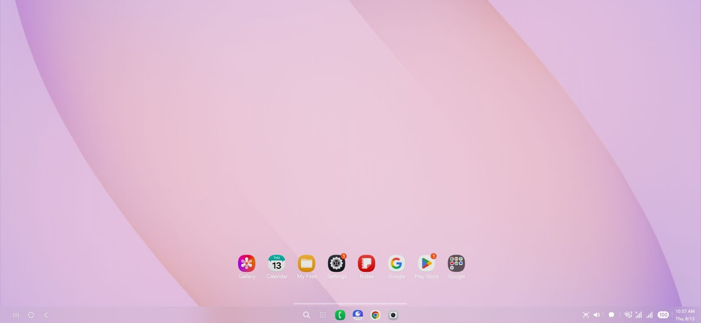
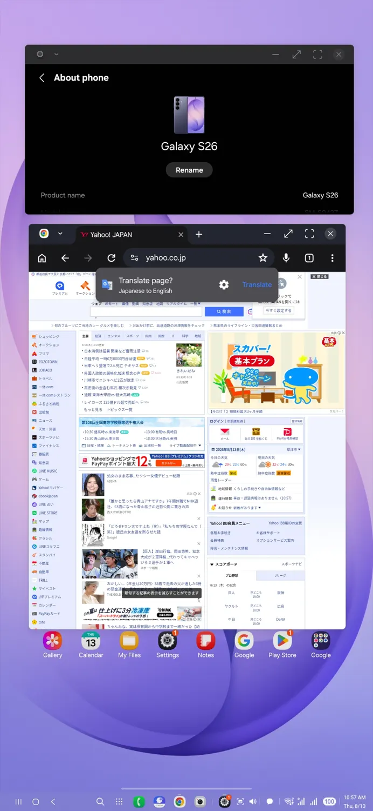

Tela virtual sob medida
Escolha resolução, densidade (DPI) e orientação. Retrato ou paisagem, no celular ou num monitor externo.
Grátis · Código aberto · Sem root
A Área de Trabalho Móvel cria uma tela virtual com janelas lado a lado, mouse, teclado e espaços de trabalho. Ligue o celular num monitor, numa TV ou no carro — ou use direto na tela do aparelho.
Versão 1.0.0 · Android 11 ou mais recente · todas as versões
Recursos do motor original do Dextop, agora com interface em português do Brasil.
Escolha resolução, densidade (DPI) e orientação. Retrato ou paisagem, no celular ou num monitor externo.
Divida a tela em 2, 3 ou 4 janelas, ou use janelas livres. Menu de apps no estilo desktop e barra de tarefas.
Salve a posição de vários apps e restaure tudo com um toque. Importe e exporte em JSON.
Modo cursor ou toque direto, clique com o botão direito, gestos com 2 e 3 dedos, multitoque e zoom de pinça.
Em dobráveis, a metade de baixo vira teclado e trackpad. Também tem teclado compacto e gamepad virtual.
Organize os monitores como estão na mesa e passe o ponteiro de uma tela para a outra.
Use a área de trabalho na central multimídia do carro, com toque completo quando estiver estacionado.
Gerenciador de janelas próprio no estilo KDE Plasma e contêineres Linux (Debian, Ubuntu, Arch) sem root.
Sobreposição com FPS, memória e bateria, recuperação de sessões e relatórios detalhados do aparelho.
Nada de mágica: o app usa recursos do próprio Android, com a sua permissão.
O app cria uma tela virtual do Android com a resolução que você escolher e espelha essa tela no celular, num monitor, numa TV (Google Cast) ou no carro.
Os apps abrem em janelas dentro dessa tela. Monte o seu arranjo — navegador à esquerda, e-mail à direita — e salve para abrir igualzinho depois.
Metades, terços, quatro quadrantes, principal grande + duas secundárias. Um toque e as janelas se encaixam.
Use a própria tela do celular como trackpad, ou conecte mouse e teclado físicos (USB ou Bluetooth). Um gesto de três dedos abre o painel de controle.
Os apps complementares levam a área de trabalho para a tela do carro, ajustada ao tamanho da central multimídia.
Para controlar telas e janelas, o app usa um serviço de acesso integrado (pareado pela Depuração por Wi-Fi) e o serviço de acessibilidade. Tudo é processado no aparelho: nenhum dado é coletado ou enviado.
O resultado depende do fabricante e da versão do sistema.
| Ambiente | Situação | Observações |
|---|---|---|
| Samsung DeX (One UI 8 ou mais recente) | Completo | O ambiente mais completo hoje. |
| Samsung DeX (antes da One UI 8) | Limitado | Versões antigas do DeX provavelmente não funcionam. |
| Google Pixel | Limitado | Depende do modo desktop do Android; alguns recursos podem falhar. |
| OPPO / OnePlus (ColorOS) | Limitado | A área de trabalho aparece, mas a barra de tarefas pode sumir. |
| Xiaomi / POCO / Redmi (HyperOS) | Não suportado | MIUI e HyperOS não são suportados. |
| Outros aparelhos Android | Experimental | Varia por modelo e atualização. Teste e conte pra gente! |
Capturas reais de um Galaxy S26 rodando o motor do app (feitas pelo projeto original).


Sim. É gratuito, sem anúncios e de código aberto (licença GPL-3.0). Você pode ler, modificar e redistribuir o código.
Não. O app traz um serviço de acesso integrado que é pareado uma vez pela Depuração por Wi-Fi do Android. Se você já usa root, Shizuku ou Stellar, ele detecta e usa automaticamente.
Android 11 ou mais recente; na prática, Android 14+ dá a melhor experiência. Os Samsung com One UI 8 (DeX) são os mais completos. Pixel e ColorOS funcionam de forma limitada, Xiaomi com HyperOS não é suportado e os demais são experimentais.
Não. Dá para usar a área de trabalho direto na tela do celular, mas ela brilha mesmo num monitor ou TV via cabo USB-C/HDMI, Google Cast ou no Android Auto.
Não. Esta versão não tem telemetria. O serviço de acessibilidade é usado só para exibir e controlar a área de trabalho, dentro do aparelho.
É o mesmo motor, criado por NarYuki, com interface revisada em português do Brasil, nova identidade e um pacote separado — dá para instalar os dois no mesmo celular.
Abra uma issue no GitHub. No app, em Configurações → Relatório do aparelho, você gera um relatório pronto.
A Área de Trabalho Móvel é uma versão modificada do Dextop, criado por NarYuki e colaboradores. Todo o motor do app é trabalho do projeto original; esta versão traz a tradução para o português do Brasil, a nova identidade visual e este site.
Distribuído sob a licença GNU GPL-3.0. Veja o aviso de modificações. Projeto não afiliado a NarYuki, Samsung ou Google.